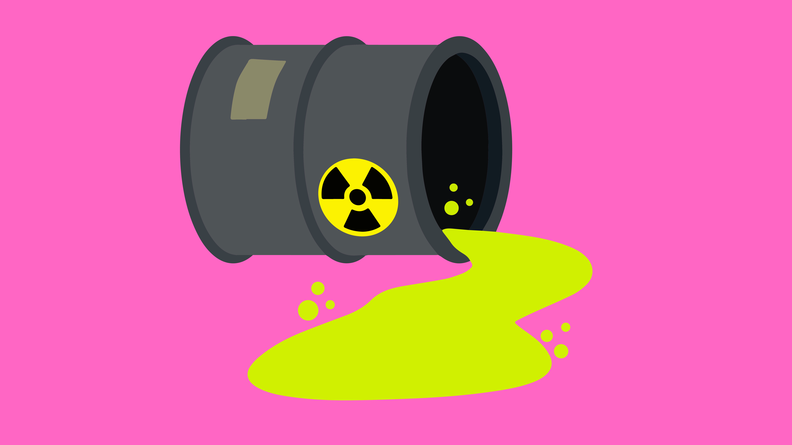

Building our future should not destroy our present
Teja Sri
Priyesh
Shyam
In the bustling symphony of urban development, the crescendo of construction often plays a discordant note – the overture of pollution. As cranes dance with concrete and scaffolding sketches the skyline, a subtle villain emerges: construction-induced pollution. The rhythmic pulse of progress leaves behind a trail of dust, noise, and chemical symphonies, altering the once-harmonious environment. The collateral damage extends beyond the construction site, casting a haze on air quality and disrupting the equilibrium of ecosystems. Join us in exploring the intricate narrative of how progress, while sculpting skylines, also etches its indelible mark on the delicate canvas of our planet.
EFFECTS ON ENVIRONMENT:Air Pollution:
Dust Emissions: Construction sites generate large amounts of dust through activities like excavation and demolition. Fine particulate matter (PM) released into the air can lead to respiratory issues and exacerbate existing health problems.
Vehicle Emissions: Construction equipment and vehicles often run on diesel or gasoline, emitting pollutants such as nitrogen oxides (NOx) and particulate matter. These emissions contribute to air pollution and may lead to smog
Water Pollution:
Sediment Runoff: Erosion from construction sites can lead to sediment runoff into nearby water bodies. This sedimentation can negatively impact water quality, affecting aquatic ecosystems and habitats.
Chemical Discharges: Construction activities involve the use of various chemicals, such as paints, solvents, and adhesives. Improper disposal or accidental spills can result in these chemicals entering water sources, causing pollution and harming aquatic life.
Noise Pollution:
Machinery and Equipment: Construction sites are inherently noisy environments due to the operation of heavy machinery, power tools, and equipment. Prolonged exposure to construction-related noise can lead to stress, hearing impairment, and other health issues.
Soil Pollution:
Contaminant Release: Construction projects may involve the excavation of contaminated soil, potentially releasing hazardous substances into the environment. This can have long-term implications for soil quality and affect nearby ecosystems.
Waste Generation:
Construction Debris: The construction industry generates substantial amounts of waste, including concrete, wood, and metal. Improper disposal of construction waste can contribute to landfill pollution and habitat destruction.
Energy Consumption:
Resource Extraction: The production of construction materials involves energy-intensive processes and often requires the extraction of natural resources. Increased energy consumption contributes to greenhouse gas emissions and resource depletion.
